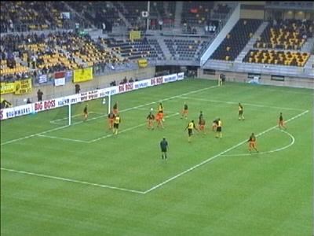
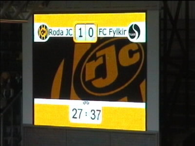
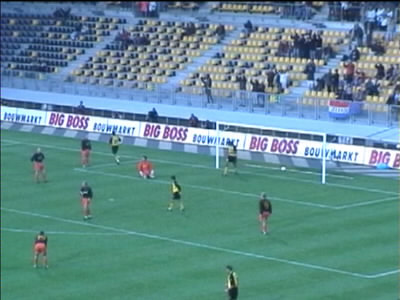
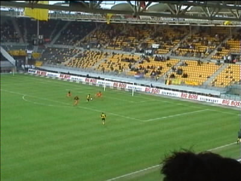

|
Roda JC - Fylkir (3-0) 11 september 20001 |
Een mini-oranjelegioen. De gast links schijnt een vat bier naar
binnen gesmokkeld te hebben :-)

Na een blunder van de Fylkir-keeper kan Nygaard inschieten.

Ons scorebord!
De roodjassen moesten geregeld aantreden.

Anastasiou loopt de 2-0 binnen.

En hier kan hij vrij simpel de 3-0 laten aantekenen.
Ondanks de zege, speelde Roda een slechte en onsamen-
hangende partij. Er is nog veel werk aan de winkel!
Nog nooit vertoond: de spelers van de tegenpartij bedanken
het Roda-publiek. Grote klasse, maar wel met een knipoog!
©KPD